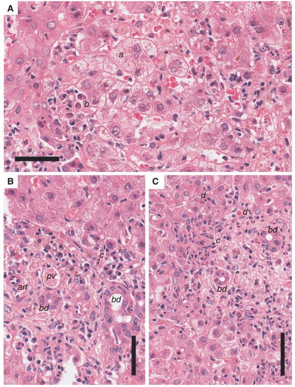
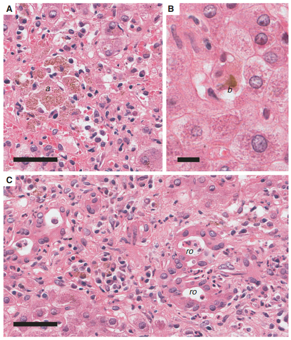
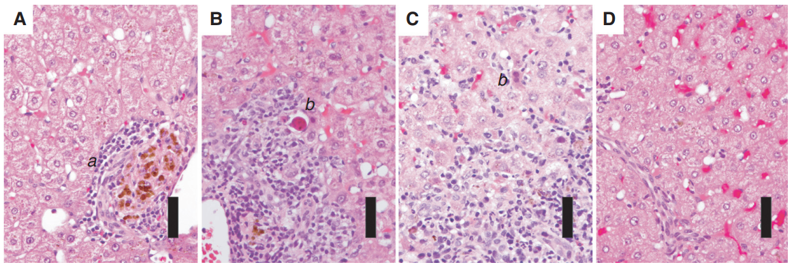
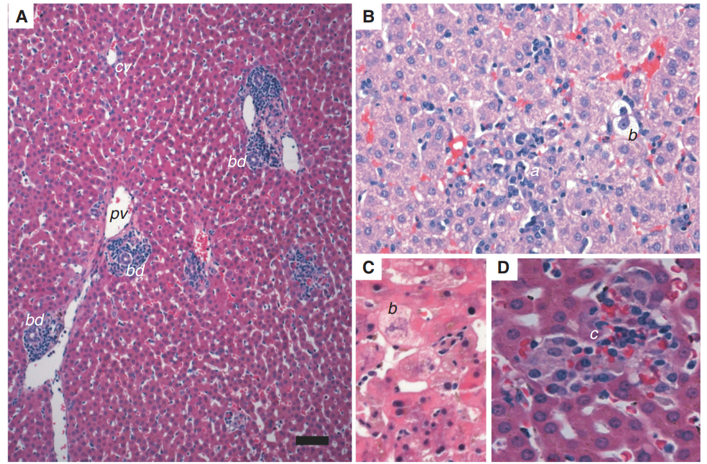
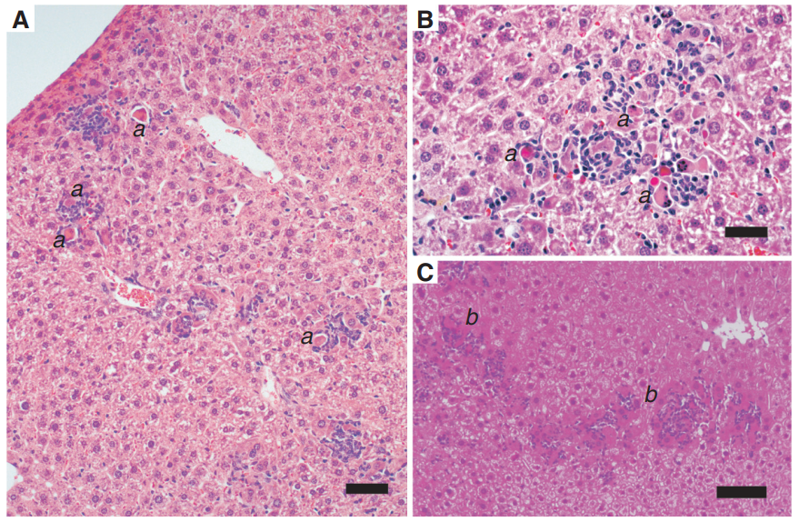

SINH LÝ BỆNH & CƠ CHẾ BỆNH SINH VIÊM GAN SIÊU VI A
Hepatitis A Virus (HAV) Pathophysiology & Pathogenesis — Phân tích phân tử cấu trúc virion trần và bán màng bọc (eHAV), con đường chết chương trình nội bào qua trục cảm biến MAVS-IRF3/7, đáp ứng miễn dịch tế bào CD8+ T, 6 đặc điểm mô bệnh học kinh điển ở người (thâm nhiễm tương bào, hoại tử mảnh, ứ mật vi quản, hoa hồng rosette), và bệnh học so sánh trên mô hình linh trưởng & chuột knockout Ifnar1-/-.
Viêm gan siêu vi A (Hepatitis A Virus - HAV) là nguyên nhân hàng đầu gây viêm gan vi rút cấp tính lây truyền qua đường phân - miệng trên thế giới. Tương tự như HBV và HCV, HAV là một virus không trực tiếp gây độc tế bào gan (non-cytopathic). Điểm độc đáo trong sinh lý bệnh của HAV là cơ chế gây tổn thương nhu mô gan kết hợp giữa con đường chết chương trình nội bào bẩm sinh (Cell-intrinsic Apoptosis qua trục MAVS) và phản ứng hủy tế bào của miễn dịch thích ứng (CTLs CD8+), tạo nên hình ảnh mô bệnh học đặc trưng bởi sự thâm nhiễm phong phú của các tương bào (plasma cells) và hội chứng ứ mật tiểu thùy.
Phần I: Đặc Điểm Vi Rút Học & Cấu Trúc Kháng Nguyên HAV (Virology & Genotypes)
Vi rút viêm gan A (HAV) thuộc chi Hepatovirus, họ Picornaviridae. Bộ gen của HAV là một phân tử RNA sợi đơn bản dương ((+)ssRNA) dài khoảng 7.5 kb, mã hóa cho một polyprotein tiền chất được xử lý thành các protein cấu trúc capsid (VP1, VP2, VP3, VP4) và protein phi cấu trúc (2B, 2C, 3A, 3B, 3C protease, 3D polymerase).
Hạt capsid hình khối 20 mặt (icosahedral) đường kính 27 nm không có vỏ bọc lipid ngoài. Cấu trúc này siêu bền vững với môi trường toan dạ dày (pH < 3.0), dung môi hữu cơ ether, clo nồng độ thấp và nhiệt độ môi trường, giúp virus tồn tại hàng tháng ngoài môi trường và lây truyền hiệu quả qua đường phân - miệng (thực phẩm và nguồn nước ô nhiễm).
Trong tuần hoàn máu của bệnh nhân, hạt virion HAV được bao bọc bởi một lớp màng lipid kép có nguồn gốc từ màng nội bào (multivesicular bodies) gọi là quasi-enveloped HAV (eHAV). Lớp màng này giúp virus né tránh sự nhận diện của kháng thể trung hòa trong máu. Khi theo dịch mật đổ vào ruột non, muối mật sẽ hòa tan lớp màng lipid này, đưa virus trở lại dạng virion trần bền vững.
3. Phân Loại Kiểu Gen & Tính Bảo Tồn Kháng Nguyên
Mặc dù được chia thành 7 genotypes (I, II, III, VII có nguồn gốc từ người; IV, V, VI có nguồn gốc từ động vật linh trưởng), HAV chỉ có duy nhất 1 Serotype kháng nguyên trên toàn cầu. Tính bảo tồn kháng nguyên tuyệt đối này là cơ sở giúp một mũi tiêm vaccine HAV có thể tạo miễn dịch bảo vệ chéo bền vững trọn đời trước tất cả các chủng virus.
Phần II: Chu Kỳ Sinh Học & Bản Chất Miễn Dịch Không Gây Độc Tế Bào
Bản chất Không Gây Độc Tế Bào (Non-cytopathic Nature): Tương tự như HBV và HCV, HAV có thể nhân lên với tải lượng cực lớn trong tế bào gan nuôi cấy và trong cơ thể người mà không trực tiếp phá hủy màng tế bào hay gây ly giải tế bào gan.
- Giai đoạn ủ bệnh yên lặng (Silent Incubation Period): Trong 2 đến 6 tuần đầu sau nhiễm trùng, virus nhân lên mạnh mẽ và bài tiết ra phân đạt nồng độ tối đa (giai đoạn có tính lây truyền cao nhất). Tuy nhiên, tế bào gan hoàn toàn nguyên vẹn, men gan ALT bình thường và bệnh nhân không hề có triệu chứng lâm sàng.
- Thời điểm bùng phát bệnh: Tổn thương hoại tử nhu mô gan, tăng men gan ALT/AST và các triệu chứng lâm sàng (vàng da, mệt mỏi, sốt, nước tiểu sẫm màu) chỉ xuất hiện khi hệ thống miễn dịch ký chủ được kích hoạt mạnh mẽ nhằm tiêu diệt và dọn sạch các tế bào gan nhiễm virus. Khi triệu chứng vàng da xuất hiện, nồng độ virus trong phân và máu đã giảm đi đáng kể.
Phần III: Cơ Chế Miễn Dịch Bệnh Học Gây Tổn Thương Gan (Immunopathology)
Tổn thương tế bào gan trong viêm gan A cấp là kết quả của sự phối hợp giữa hai con đường bệnh sinh độc đáo:
Cơ chế phân tử: Khi HAV nhân lên trong bào tương, RNA sợi đôi trung gian của virus được các thụ thể nội bào nhận diện, truyền tín hiệu kích hoạt phân tử tiếp hợp ty thể MAVS (Mitochondrial Antiviral Signaling Protein) và các yếu tố điều hòa phiên mã IRF3 / IRF7.
Hậu quả: Trục MAVS-IRF3/7 cảm ứng biểu hiện các gen proapoptotic ISGs (Interferon-Stimulated Genes), thúc đẩy tế bào gan nhiễm virus tự kích hoạt chu trình chết theo chương trình (Apoptosis). Cơ chế này diễn ra độc lập, không cần sự tham gia của tế bào T hay kháng thể.
Cơ chế phân tử: Các tế bào T CD8+ gây độc (Cytotoxic T Lymphocytes) và tế bào T CD4+ đặc hiệu HAV thâm nhiễm ồ ạt vào nhu mô gan, nhận diện các peptide kháng nguyên virus trình diện qua phân tử MHC lớp I trên màng tế bào gan.
Hậu quả: Tế bào CTLs phóng thích Perforin, Granzyme B và kích hoạt thụ thể tử vong Fas / FasL, gây hoại tử tế bào gan cấp tính diện rộng, giải phóng ồ ạt enzyme nội bào (AST, ALT) vào máu.
Phần IV: Đặc Điểm Mô Bệnh Học Đặc Hiệu Của Viêm Gan A Cấp Ở Người (Histopathology)
Dưới kính hiển vi quang học tiêu bản nhuộm H&E, viêm gan A cấp tính thể hiện 6 tổn thương mô học kinh điển:
- 1. Phình to tế bào gan (Hepatocellular Ballooning) & Lộn xộn tiểu thùy (Lobular Disarray): Tế bào gan trương phồng tích tụ dịch nội bào, bào tương có dạng ren (lacy appearance), phá vỡ cấu trúc bè gan song song bình thường.
- 2. Thâm nhiễm phong phú Tương bào (Plasma Cells): Đây là dấu ấn mô học độc đáo nhất của viêm gan A so với các viêm gan virus khác. Sự hiện diện dày đặc của tương bào trong khoảng cửa tạo ra hình ảnh mô học rất giống với Viêm gan tự miễn (Autoimmune Hepatitis - AIH), cần đối chiếu huyết thanh học để phân biệt.
- 3. Tổn thương quanh khoảng cửa & Hoại tử mảnh (Piecemeal Necrosis): Đám tế bào viêm thâm nhiễm dày đặc phá vỡ màng giới hạn (limiting plate) của khoảng cửa, tấn công các tế bào gan rìa (periportal hepatocytes) tạo hình ảnh hoại tử mối gặm.
- 4. Thể ưa acid / Thể Councilman (Acidophilic Apoptotic Bodies): Các tế bào gan bị chết chương trình co cụm lại, bào tương bắt màu hồng sẫm (deeply eosinophilic) và nhân đông ngưng tụ, kế cận các tế bào Kupffer phì đại chứa sắc tố hemosiderin.
- 5. Hội chứng ứ mật vi quản (Cholestasis & Rosettes Formation): Sự hình thành các nút mật đặc (bile plugs) trong các vi quản mật bị giãn rộng ở vùng trung tâm tiểu thùy. Các tế bào gan có thể tự sắp xếp lại thành cấu trúc hình hoa hồng (pseudorosettes) bao quanh vi quản mật.
- 6. Phản ứng ống mật (Ductular Reaction) & Không có xơ hóa tiến triển: Tăng sinh các tiểu quản mật nhỏ quanh khoảng cửa để bù đắp tái tạo nhu mô. Do bệnh tự giới hạn hoàn toàn trong 6 tháng, sự hình thành dải xơ mạn tính (fibrosis) không bao giờ xảy ra trong nhiễm HAV.


Phần V: Bệnh Học So Sánh Trên Các Mô Hình Thực Nghiệm (Comparative Pathology)
Nghiên cứu bệnh học so sánh trên các mô hình linh trưởng và chuột chuyển gen đã giúp làm sáng tỏ toàn bộ động học tiến triển và cơ chế bệnh sinh của HAV:
1. Động Học Mô Học & Men Gan Trên Mô Hình Tinh Tinh (Chimpanzee)
Sinh thiết gan tuần tự chứng minh mối tương quan chặt chẽ giữa men gan ALT và tổn thương mô học:

2. Mô Hình Khỉ Đêm (Owl Monkey) & Chuột Knockout Ifnar1-/-


Phần VI: Đối Sánh Toàn Diện HAV vs HBV vs HCV & Clinical Pearls
1. Bảng Đối Sánh Toàn Diện Sinh Lý Bệnh 3 Loại Siêu Vi Viêm Gan Phổ Biến
| Đặc tính So sánh | Viêm Gan Siêu Vi A (HAV) | Viêm Gan Siêu Vi B (HBV) | Viêm Gan Siêu Vi C (HCV) |
|---|---|---|---|
| Đường Lây Truyền Chính | Phân - Miệng (Nước & Thức ăn ô nhiễm) | Đường máu, tình dục, mẹ truyền sang con | Đường máu (tiêm chích ma túy, truyền máu) |
| Cấu trúc & Màng bọc | Virion trần (phân) / Bán màng bọc eHAV (máu) | Virion có màng bọc lipid (Hạt Dane) | Hạt lai phức hợp Lipo-Viro-Particle (LVP) |
| Bản chất Bộ gen | (+)ssRNA 7.5 kb (1 Serotype duy nhất) | DNA bán kép (rcDNA 3.2 kb) | (+)ssRNA 9.6 kb (Đa dạng 6 genotypes) |
| Tiến triển Mạn tính | Hoàn toàn KHÔNG (0%) | 5 - 10% (Người lớn), > 90% (Trẻ sơ sinh) | 70 - 85% (Rất cao) |
| Dấu ấn Mô học Đặc trưng | Thâm nhiễm dày đặc Tương bào (Plasma cells), ứ mật, nút mật & hoa hồng rosette | Tế bào gan kính mờ (Ground-glass hepatocytes do tích tụ HBsAg) | Mỡ hóa gan (Steatosis), tích tụ lipid quanh tế bào, nang lympho khoảng cửa |
| Nguy cơ Ung thư Gan (HCC) | Không có nguy cơ | Cao (trực tiếp qua Oncoprotein HBx & Tích hợp DNA) | Cao (gián tiếp qua Xơ gan tiến triển) |
| Dấu ấn Huyết thanh Chẩn đoán | Anti-HAV IgM (Cấp tính) / Anti-HAV IgG (Miễn dịch) | HBsAg, Anti-HBs, HBeAg, Anti-HBc, HBV-DNA | Anti-HCV, HCV-RNA định lượng PCR |
| Dự phòng bằng Vaccine | Có vaccine hiệu quả cao trọn đời | Có vaccine hiệu quả cao | Chưa có vaccine (do biến dị Quasispecies) |
- Chẩn đoán phân biệt với Viêm gan tự miễn (AIH): Do viêm gan A kích thích thâm nhiễm lượng lớn tương bào (plasma cells) và có thể gây tăng IgG huyết thanh tạm thời, tiêu bản sinh thiết gan có thể gây nhầm lẫn nghiêm trọng với AIH. Luôn luôn kiểm tra Anti-HAV IgM trước khi quyết định điều trị ức chế miễn dịch/corticoid cho bệnh nhân nghi ngờ AIH khởi phát cấp tính.
- Hội chứng ứ mật kéo dài (Prolonged Cholestatic Hepatitis A): Khoảng 5% bệnh nhân viêm gan A có diễn tiến vàng da ứ mật nặng nề (Bilirubin huyết thanh có thể > 15 - 20 mg/dL kéo dài suốt 12 - 18 tuần kèm ngứa dữ dội). Mặc dù xét nghiệm mô học thấy nút mật đặc và rosette, tiên lượng bệnh vẫn hoàn toàn lành tính và tự hồi phục, không để lại di chứng xơ hóa.
- Thể viêm gan A tái phát (Relapsing Hepatitis A): Khoảng 3 - 20% bệnh nhân có thể xuất hiện đợt bùng phát men gan và vàng da thứ hai sau khi đợt viêm cấp đầu tiên đã thoái lui 1 - 3 tháng. Đây là hiện tượng đáp ứng miễn dịch hai pha, không phải do tái nhiễm chủng mới và bệnh vẫn sẽ tự khỏi hoàn toàn.
📚 Tài liệu Tham khảo Chính (AMA Format)
- 1. Cullen JM, Lemon SM. Comparative Pathology of Hepatitis A Virus and Hepatitis E Virus Infection. Cold Spring Harb Perspect Med. 2019;9(9):a033456. doi:10.1101/cshperspect.a033456.
- 2. Shin EC, Jeong SK. Natural history, clinical manifestations, and pathogenesis of hepatitis A. Cold Spring Harb Perspect Med. 2018;8(9):a031708. doi:10.1101/cshperspect.a031708.
- 3. Feng Z, Hensley L, McKnight KL, et al. A pathogenic picornavirus acquires an envelope by hijacking cellular membranes. Nature. 2013;496(7445):367-371. doi:10.1038/nature12029.
- 4. European Association for the Study of the Liver (EASL). EASL Clinical Practice Guidelines: Management of acute (fulminant) liver failure. J Hepatol. 2017;66(5):1047-1081.